川口市栄町、オレンジ色のテントと花壇が目印の美容室です。
成人式のお仕度一式やお着付け、生花を使ったヘアアレンジメント、オリジナルの地肌ケアまで。
小さなお子様からご年配の方まで、ご一緒にお過ごしいただいています。
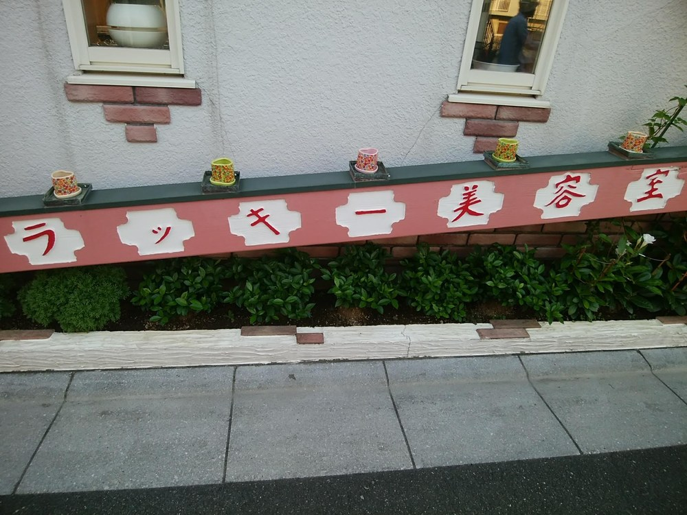
髪の毛を大切にすることをモットーに、この場所で営んでいます。
成人式のお仕度は、大手の着物店の振袖ご担当者様から毎年ご紹介をいただいています。卒業式の袴、七五三、訪問着などのお着付けにも対応しています。生花を使ったヘアアレンジメントは一点ずつお作りするので、お着物やその日の装いに合わせてご相談ください。
髪だけでなく地肌も大切に、というのが当店の考え方です。イオンスチーマーで地肌をやわらかくしてからトリートメントを入れる、オリジナルの地肌ケアをご用意しています。施術の前後はモニターで実際の地肌をご覧いただけます。
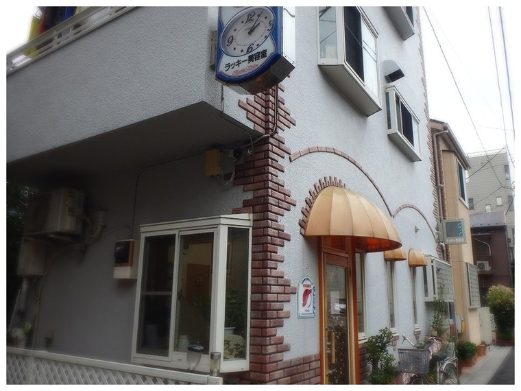
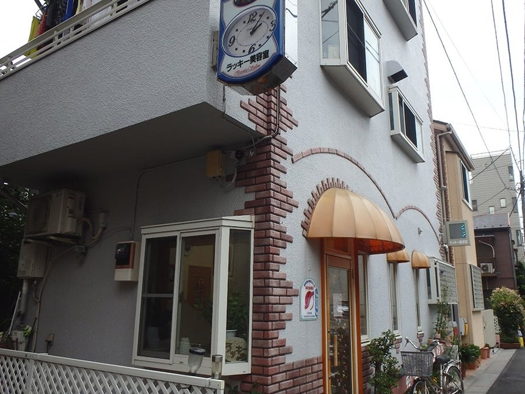
お着物に合わせた、生花のヘアアレンジメント
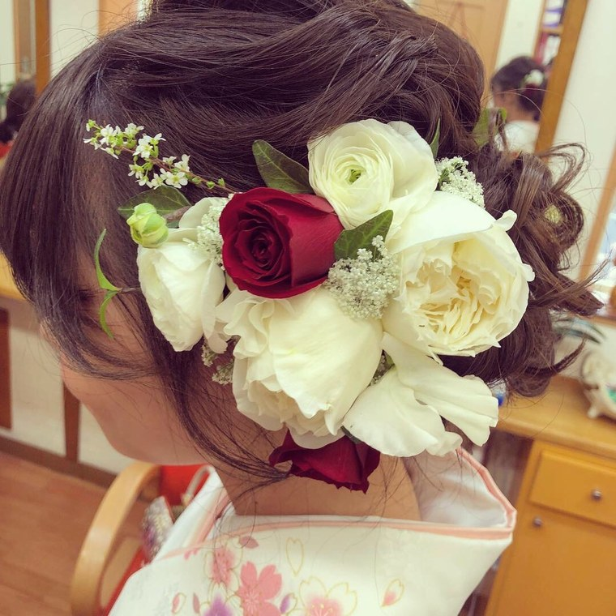
白のバラに赤を一輪。淡い色のお着物に、締まりを持たせたアレンジです。
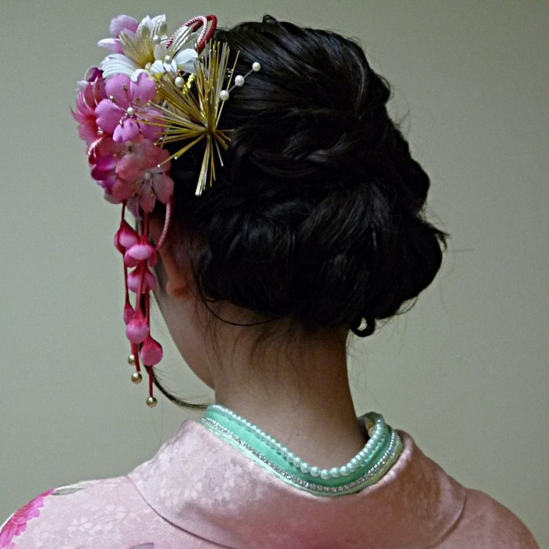
かんざしと小花を組み合わせて。すっきりとまとめた和装向けのスタイルです。
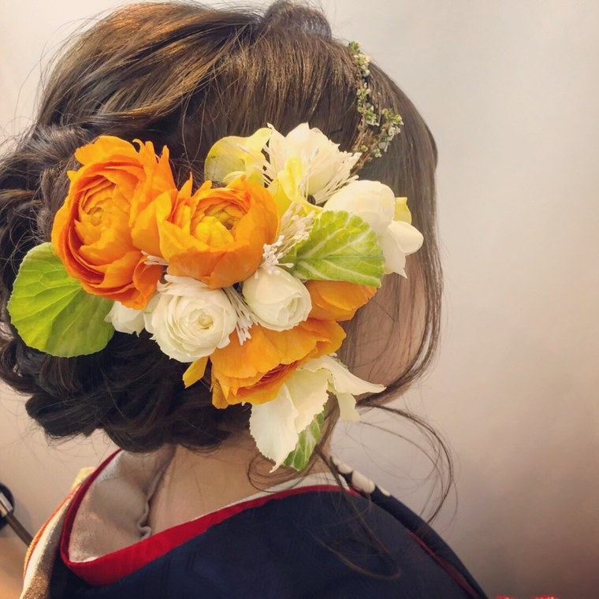
生花をふんだんに。振袖の色味に合わせて、お花の種類からご相談いただけます。
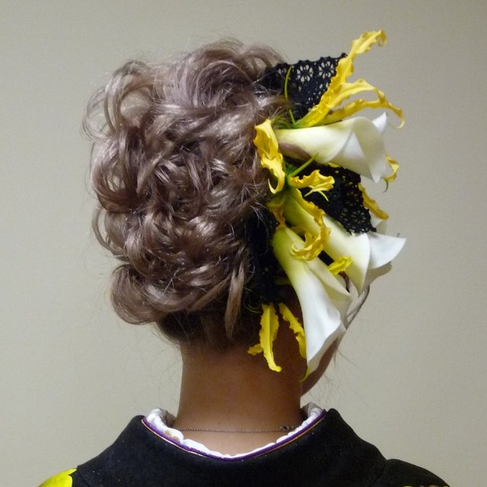
リボンと造花を合わせて。お式やパーティーのヘアセットにも対応しています。
※ 写真はサロンが公開しているスタイル例です。生花の内容はご相談のうえお作りします。
成人式・お着付けの流れ
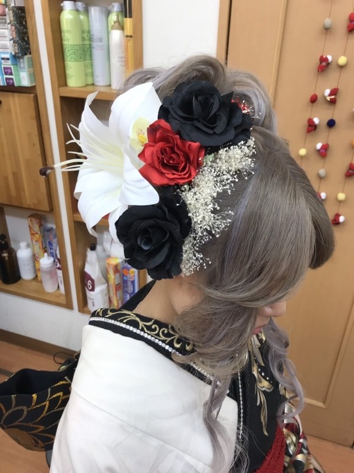
成人式は、お一人ずつ事前のお打ち合わせを行っています。お着物の色柄を拝見しながら、当日のヘアスタイルとお花の雰囲気を一緒に決めていきます。当日の集合時間もこのときにご相談ください。
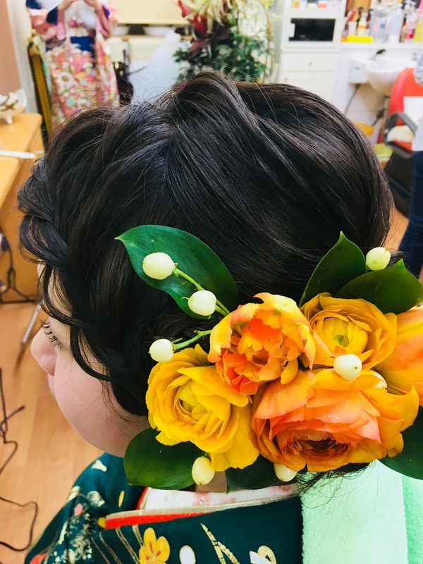
当日はヘアセットからお入りします。生花をお使いになる場合は、その日に届いたお花を見ながら組み合わせて、髪に合わせてお付けします。一点ずつお作りするので、同じものはひとつもありません。
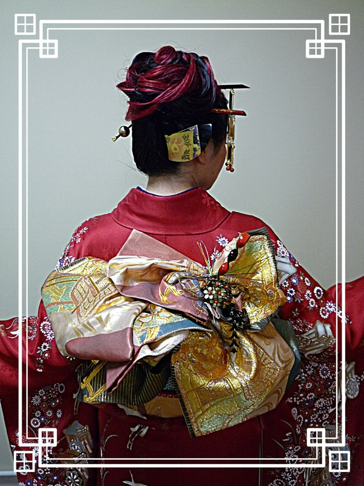
メイクのあと、お着付けに移ります。長時間お過ごしになることを考えて、苦しくなりにくい着付けを心がけています。帯結びはお着物と帯を見てからご提案します。
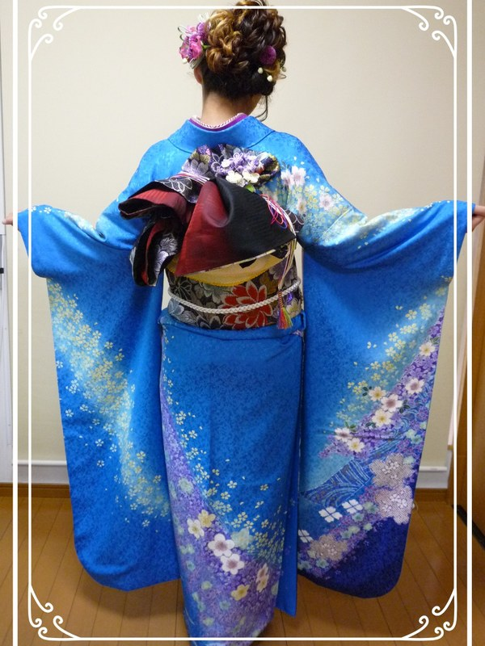
全身を鏡でご確認いただき、気になるところを整えてお仕上げです。お式の時間に合わせて、早朝のご来店にも対応しています（早朝料金はいただいておりません）。
※ 成人式のご予約は毎年埋まりやすいため、お早めにご相談いただけますと幸いです。
ご予約・お問い合わせは、
お電話または下記フォームより承っております。
成人式やお着付けのご相談も、お気軽にどうぞ。
※本サイトはサンプルのため送信されません。
実際のご予約はお電話にて承ります。